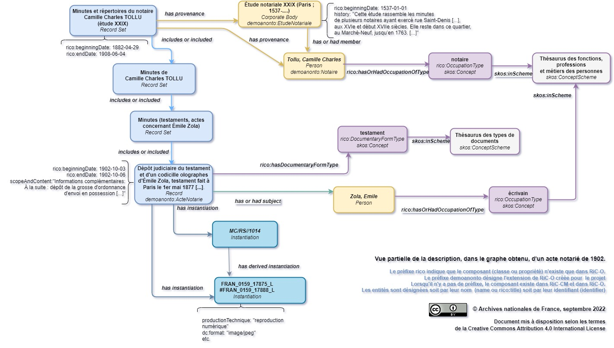
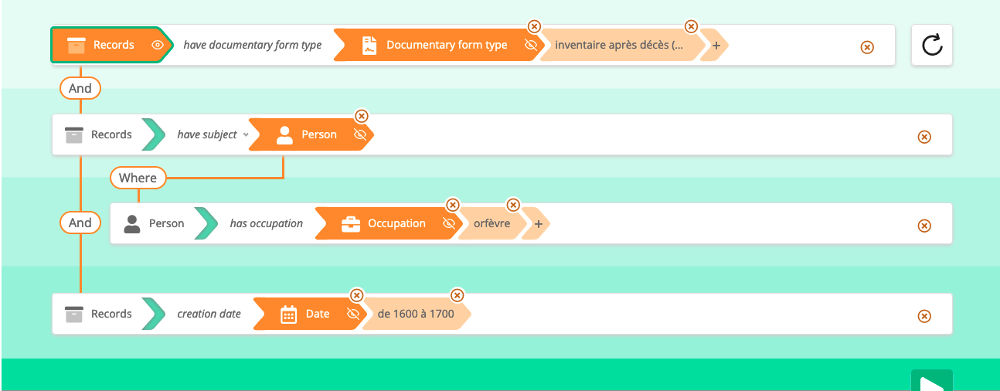
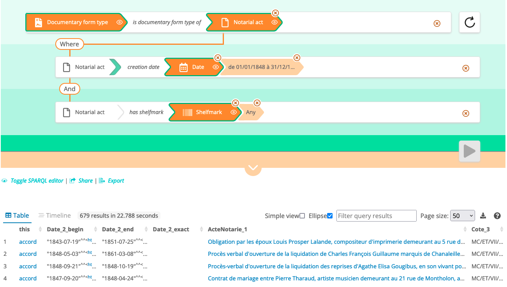

This demonstrator was created as part of the development work, between August 2021
and June 2022, of a new version of the open source visual SPARQL query editor Sparnatural, for which the French Ministry of Culture,
the National Library of France, and the National Archives of France have partnered to contract
with Sparna, Sparnatural’s lead developer.
This demonstrator, which uses the current version of Sparnatural, is the result of an exploratory work on the transition from
archival metadata to data graphs, following the projects of qualitative proof of concept PIAAF (released in February 2018) and development of the RiC-O Converter
software (version 1.0 released in April 2020). The main challenge of the project was to provide users with a
relevant and accessible research interface to explore an archival
metadata graph of significant size, which exploits its nature.
Objectives
The work to develop the current version of Sparnatural was carried out by the project
team — i.e. representatives of the three partner institutions and Sparna — with the
aim of providing answers to the following general questions:
- How to value a knowledge graph as a knowledge graph?
(and not behind a faceted
search engine or clickable navigation links)
- How to promote exploratory user interactions (test/error) to discover the
data?
- How to reconcile generic conceptual models with the specific points of view of the end users?
From the point of view of the National Archives, the demonstrator was to be used in
particular:
- to test the evolutions of Sparnatural and thereby contribute to the
development work;
- to set up a very first web application making it possible to query and consult a significant part
of the institution’s archival metadata, converted to RDF/RiC-O.
In doing so, the objectives were also:
- to demonstrate that large-scale semantization of “classic” archival metadata is
possible, and that this opens up new search opportunities for users;
- to show what such an operation allows to learn about these metadata;
- to build a methodology and acquire skills on the implementation of Sparnatural,
which was likely to be used in other projects.
This work is part of an overall strategy for the evolution of National Archives’ metadata and information system towards better quality, more accessible metadata and linked entity graphs.
The current content of the demonstrator
The metadata of the National Archives of France are today mainly:
- more than 30,000 finding aids (conforming to the XML/EAD 2002 DTD),
- more than 15,400 authority records (conforming to the XML/EAC-CPF schema) on archival creators,
- vocabularies used to index these files,
to describe about 375 linear km of paper archives of all types, not including
natively digital archives. The salle des inventaires
virtuelle(online catalog) allows users to search all of these metadata.
Given this important volume, in the absence of a semantic application such as data.bnf.fr and given the human and financial
resources available, a subset of these metadata had to be selected to feed the
Sparnatural demonstrator.
The data graph production process
The selected metadata have been converted into linked data graphs, compliant to the new Records in Contexts Conceptual Model (RiC-CM) and its technical transposition, the Records in Contexts-Ontology (RiC-O, version 0.2,
published in February 2021).
The conversion was carried out twice. The first iteration was performed in November
2021, the second in May 2022, after learning various lessons from the first one and
from the initial configuration work on the demonstrator.
To convert the XML/EAD and XML/EAC-CPF files, we used the open source software RiC-O
Converter, developed for the National Archives in 2019 and available on
GitHub since April 2020. RiC-O Converter produces RDF files compliant with RiC-O 0.1.
The resulting files were then made compliant with RiC-O 0.2 and slightly enriched
or modified by specific scripts written by the Lab. Among the enrichments and changes
made let us mention: the propagation of the provenance relation from the description of each fonds to the description of all the archival resources included in this fonds, the categorization (with the rico:hasDocumentaryFormType property and the document type vocabulary) of
instances of rico:RecordResource that can be identified as registers, lists of acts and
mentions of acts, and the replacement of association relations between notarial
offices and notaries by more precise membership relations.
The vocabularies
and records used to index EAD and EAC-CPF files have been converted using dedicated
scripts, written and used by the Lab.
Finally, once imported into the
RDF database chosen for the demonstrator (currently, an instance of the free GraphDB Free software, configured in a very simple way), the data graph has been further
enriched, in order to create classes specific to notarial archives and to
“populate” these classes by inference. The screenshot below shows an example: these
are the SPARQL queries that were used to add the demoanonto:Repertoire class to
the RDF database and to create the instances of this class. In other words, an
ontology extending RiC-O 0.2 was produced and implemented. Even if this work was not
essential, it has greatly facilitated the design of the demonstrator’s configurations and
also made it possible to optimize its operation by reducing the execution time of
certain queries.

Example of a SPARQL query to create a class in the graph.
Statistical elements concerning the resulting RDF graph
The graph obtained currently has about 57,9 million RDF triples, including
about 37 million inferred triples. We can therefore already estimate that the RDF
graph resulting from the semantization of all metadata from the notarial archives of the
National Archives would amount to about 170 million triples. In addition, let us recall that the approximately 4900 finding aids of the DMC make up 16 % of the total
number of 30,000 finding aids. Even if simplistic extrapolations are to be avoided, especially since these EAD files are among the most indexed and precise in the National
Archives, it is now proven that semantizing all of the institution’s XML metadata
would produce an extremely massive dataset.
This dataset is the first large-scale semantization operation (in RDF compliant with RiC-O 0.2) carried out by the National Archives (and
in France as far as we know) of “classic” archival metadata. It should be
noted that another less massive dataset was also released in December 2021 (in a
public repository
on GitHub) and that it is also accessible via the SPARQL endpoint of the
ALEGORIA project).
In this dataset, are used, among the components defined in RiC-O 0.2:
- 34 classes (entity categories) out of 106 (48 with inferred triples);
- 25 datatype properties (relations whose target is a string) out of 62 (28
counting inferred triples);
- 79 object properties (relations whose target is an entity) out of 423 (162 with inferred
triples).
SPARQL queries executed directly in the SPARQL endpoint of the RDF database, in order
to go beyond the limit of 1000 results set for the Sparnatural interface, give the
following counts for the main categories of objects described in the graph:
- 72,665 groups of records (fonds, series, bundles, clients files, etc.);
- 400,570 notarial acts (described to date) within the bundles;
- 104,383 mentions of acts recorded in the registers;
- 3135 registers;
- 13,127 lists of acts within the registers, including 11,670 digitized
lists;
- 629,246 persons (including 3,213 persons with an IRI);
- 530 organizations (including 528 with an IRI);
- 15,559 places (including 15,463 with an IRI).
As explained below, if the quantities found for notarial acts, mentions of acts and
lists of acts are to be regarded as a good approximation (given the fairly
reliable reasoning that we used to generate the data), the numbers found for persons and
registers are not reliable and can only be considered orders of magnitude. However, these
statistics, on their own, show in our opinion the interest of the technologies used
(since it is currently impossible for an end-user to obtain them via the Salle des
inventaires virtuelle, and it is not easy to calculate them for a professional
competent in the field of XML technologies). They show above all, if it is still
necessary to prove it, the very richness of these archival holdings.

Partial representation, through a diagram, of the description of a notarial act in the graph.
See also the following page in the demonstrator: https://sparnatural-demo-anf.huma-num.fr/lodview/recordResource/041835-c1p6y1e0w26r--183v6ez58hjun.html.
We will continue to work on these data, as explained below.
You can now access the repository where we manage the RDF dataset on GitHub: https://github.com/ArchivesNationalesFR/Sparnatural_prototype_data. For the moment, any reuse of this dataset must be subject to the prior written agreement of the National Archives. Do not hesitate to contact us if you
have questions or want to reuse this data.
The graph exploration interfaces
Choices and design methods
Several Sparnatural configuration options are possible: configuration via a Google
spreadsheet or an OWL ontology (see the documentation). The Lab chose to
configure the demonstrator via an ontology, with the help of Sparna, and used Protégé, a free software, to edit the
ontology.

Sparnatural class edition in Protégé.
The configuration ontology of a Sparnatural search interface imports and uses
components defined in two generic ontologies included in the source code of the
software.
The aim is to specify an ontological model for research and its
correspondence with the classes and properties of the domain ontology.
This approach makes it possible to retain certain categories of objects or
relationships rather than others that are considered secondary to search, to specify
new ones to group several existing components in order to simplify the exploration of
the graph or to represent text type nodes, to give them understandable labels in the
language you want, to define a display order for the main entry points, to specify how
the target nodes of a relationship are displayed, to use existing SKOS vocabularies, etc. If you know HTML, the data
contained in the graph, the business model used and its implementation, SPARQL and the OWL language,
you can build and develop your interface independently.
The aim for the Lab was therefore to achieve a reasonable compromise between the
complexity of the domain model and the need to produce an understandable and
efficient interface for users. It took a long time to achieve the current
result, through successive iterations. Feedback from users during the two workshops
held at the end of 2021 were invaluable in this respect and really guided both the
developments of the software and the choices we made.
The design work of the search interfaces also made it possible to test the features developed as part of the Sparnatural evolution project, including:
- the support of the OPTIONAL clause (which facilitates the discovery, as the granularity
and the accuracy of the data are variable and not determined in advance in a graph of cultural metadata, in
particular in a archival metadata graph) — we used this possibility for many
relationships, e.g. ‘has digital surrogate’, ‘has title’, ‘have subject’;
- FILTER NOT EXISTS support (to express the negation of a property) — we also
retained this possibility in the same cases as for OPTIONAL;
- the ability to select values from a tree list (of type thesaurus) — we used this
feature to allow selection in the document type thesaurus;
- the ability to add contextual help (tooltips) — this allowed us to attach to each of
the categories of entities usable in the interface a short definition useful in the
context of the project;
- the ability to pre-record queries, in order to guide the user in his first queries;
- the ability to choose the result columns to display — this allows the user to define the
contents of the result list as he wishes, so that he can immediately have textual
data (rather than only the URIS of entities that a classic SPARQL query returns by
default), operate sorts and then make an export in CSV format;
- the ability to translate the interface into as many languages as necessary — so far we
have been able to deploy the search interfaces of the National Archives demonstrator
in French and English.
Results
Warnings
The demonstrator only consists of two search interfaces and this
documentation. The National Archives, unlike the BnF (with data.bnf.fr), does not have a website for viewing
data graphs. A feature has therefore been added to the Sparnatural demonstrator, to
associate with each result entity a page allowing to view its description in a simple
way (via the Lodview application). This feature is
not entirely optimal. Moreover, RDF resources IRIs are not currently dereferencable;
in particular, no webpage is associated with these IRIs, nor can we guarantee the
sustainability of the root segment
(http://data.archives-nationales.culture.gouv.fr/).
The results obtained still show some small technical flaws that we will try to correct. Furthermore, we take any comments or suggestions for improvement. We are aware that
after the user workshops held at the end of 2021, these interfaces need to be tested by
more users. Just like the RDF queried data, the interfaces are likely to evolve
significantly.
The source code of the demonstrator is available in the following repository on GitHub: https://github.com/sparna-git/sparnatural-demonstrateur-an.
A Configuration
The first configuration (A interface) is simple and
generalistic; it can almost be applied to any RiC-O compliant archival dataset,
insofar as contextual entities such as archival creators, document subject agents, locations
are indexed. It is a priori rather intended for the discovery of metadata.
.
The main categories of objects (classes) defined in the configuration ontology and
usable in this first interface are:
- Records (a project-specific class, which gathers all archival resources, thus all
instances of the RiC-O RecordResource
class, with the exception of finding aids and authority records);
- Person (which corresponds to rico:Person class);
- Organization (which corresponds to rico:CorporateBody class);
- Place (which corresponds to rico:Place class);
- Documentary form type (class of SKOS concepts defined in the vocabulary of the
document types of the National Archives, also instances of rico:DocumentaryFormType class);
- Subject (class of SKOS concepts defined in the vocabulary of the national archives
subjects, also instances of rico:Thing class);
- Occupation (class of SKOS concepts defined in the vocabulary of occupations and
functions of persons in the National Archives, also instances of rico:OccupationType class);
- Digital surrogate (the instances of class rico:Instantiation having JPEG format, generated from the daogrp elements of
EAD files);
- and other associated ‘entities’, which correspond to literal values of RiC-O datatype
properties: date, title, name.

Pre-recorded query in the interface A : inventories after death of goldsmiths in
the 17th century
B Configuration
The second configuration (B interface) exploits the
specificities of notarial archives. It is a priori rather adapted to the
needs of a person familiar with this universe, archivist or accustomed user. This
is the configuration that has had the greatest number of changes in
the history of the project.
In addition to the categories of objects listed above,
this configuration defines and uses new categories of objects, and establishes for these
new categories correspondences with classes of the ontology extending RiC-O mentioned
above:
- Record set (which corresponds to rico:RecordSet class),
Notarial register, List of acts, Notarial act, Mention of an act, Reference Code;
- Notarial office, Notarial office number, Notary;
- Parisian district or parish, Street in Paris, Parisian building, Address.
Most of these entities can be used from the beginning of writing a
query.
New relationships are also present, for example between notarial office and notaries
(Notary is member of Notarial office), between notaries (Notary has
successor or has family relation with Notary), between archival resources (such as
Notarial register includes or mentions Mention of an act or List of acts).
Bilan
The demonstrator as an exploration and research device
The results are very positive in terms of the possibilities for exploring the
graph and the new research opportunities offered by Sparnatural.
Among
the main points identified by users during the November 2021 workshops, once the
surprise effect has passed, one can mention the intuitive, flexible and interactive
nature of this type of interface, which also requires a greater intellectual
commitment for the user than to fill out a classic search form. The user builds his
questionnaire by choosing among the options available to him and discovers the content
of the graph at the same time as he constructs his search; he’s really taking over. It is also easy for him to go back by undoing a step, then the previous one.
Finally, he can share the executed query or export the results of his search.
We cannot, of course, replace the non-archivist user or the one who does not know the
RiC-O data model at all. We just want to present here an example of the searches that
a classic search form in EAD files currently does not allow to do, and which
Sparnatural makes possible. This example is the same as the third pre-recorded query
in the B search interface.

Pre-recorded query in the B interface : documentary form types of the notarial
actes dated 1848, with their reference codes
In this example, we first see that the entry point is a context entity,
which is currently rare in our archival search interfaces, in which the focus is
mostly placed at the outset on archival documents. The query editor then allows you to
choose a category of entity related to document types (here, the choice fell on notarial acts), before going through the graph step by step. The user is still on the same HTML page, and remains in the context of
the construction of a questionnaire (without having to work on search
results in which you would then click on
hyperlinks, to find out what to expect). He could thus, for example, also be interested in the archival creator of the acts (notary or notarial office). Such a question, even if it is not formulated
in natural language, seems to us close to the formulation that a researcher in history
might make of it, who would like, for example, to form a corpus and to get a first
idea of it. One of the notable features here is also that the user can, for many
relationships, either select the target precisely, or request all the targets of a
given relationship (here, all notarial acts, or all dates), at least
initially. The ability to determine which information is included in the results
table, and to have textual values (entity labels), not just URIs, in this table, is
also particularly valuable. Finally, the user can easily modify his questionnaire
in stages, or share the query and save the link in his own files, in order to
replay the query later.
The functional limits of the demonstrator are essentially those of
Sparnatural. The first, already mentioned above, is that it is a tool for
bulding an exploration and search interface in a knowledge graph, not for displaying
the data listed in the result tables and consulting them. Moreover, the National Archives does
not yet have a way to de-reference URIs. The HTML page display feature achieved using Lodview,
obviously does not replace a real design work of a consultation interface,
that could also help visualize parts of the obtained graph, in line with what the PIAAF prototype proposed for a much
smaller amount of data. This was not the purpose of the work done under this
project.
Such a search interface is not, moreover, exclusive of a ‘full text’ search allowing,
from the word or expression entered, to have a list of suggestions giving for each
of them the type of entity concerned; or tab-type navigation options (one tab per
entity category) as the PIAAF prototype also offers.
Of course, in addition to these limitations, the dataset used does not provide a homogeneous coverage
of the archives of the first 40 notarial offices: the
work of analyzing the notarial acts held within these fonds is continuing at the DMC, as in
the other fonds.
The RDF graph obtained, an example of large-scale use of
RiC-O
The result of this large-scale conversion of XML/EAD and XML/EAC-CPF source data to
RDF compliant with RiC-O clearly showed:
- that this conversion is entirely possible without necessarily making any
changes to this data;
- that the graph obtained from classic archival metadata of this type will
offer all the more different entry points and will be all the more rich in nodes
(in entities of various types) as the source metadata use reference data
(authority records, vocabularies) to describe the contextual entities of the
archives;
- that, even from well-indexed metadata, such an operation will only use a
subset of the RiC-O classes and properties, which is normal since RiC-O is the
technical transposition of an overall conceptual framework;
- that, while employing only a small part of RiC-O, carrying out such a project
may encourage, in particular in the case of a homogeneous archival corpus such
as ours, to extend this ontology, which is a very generic international model
which cannot take into account the variety of corpuses or all local specificities
and needs.
Such lessons may, in our view, be useful to any institution or team that would
consider following the same path. We would of course be interested in any comparable
feedback.
A new perspective on the metadata used
At this early stage of the work on metadata that the demonstrator allows to explore,
as we have already mentioned above, thanks to semantic technologies, we have new
quantitative elements on the content of the described archives. We will be able
to refine this mapping in the coming months.
Moreover, as in any project for
the production and publication of graphs of linked entities from pre-existing
data, where a more or less significant leap is made in precision, the work on the
data and their exploration as a graph have highlighted problems in the source
metadata, although not unknown but so far very little visible and difficult to
quantify. Here we will take two examples.
629 246 people in the graph?
The essentially free indexing, via the element EAD <persname>, of persons
(except for 3213 of them with authority records) in the finding aids processed results
in a very large number of entities of the type rico:Person in the graph, about which
little is often known (e.g., we know the occupation of 34 925 of these persons only) and which
have not been the subject of aggregation or identification work. In fact, entities
with the same name can be aggregated as a single entity Person in this graph only if there is absolute certainty or quasi-certainty that it is the
same natural person — when, for example, that person is found at about the same
date, with the reference to the same occupation or function (or the same relations with other
persons), in the acts of the same notary or mentioning the same property. This
is a very interesting field of investigation. Regardless of the results, there
should be a very large cohort of highly blurred individuals whose numbers are not
expected to differ significantly from the initial number.
3135 registers?
This number is much higher than the observed reality. It results from the fact that
in the finding aids treated, there are usually two descriptions (two EAD
<c>elements between which no relationship is currently established), created in
two different finding aids, about the same register: one describes the fonds of a given notary, thus its
registers — and sometimes, references to acts in the registers — and minutes; the
other, produced as part of the full digitisation of registers, describes the
notary’s registers as material objects and the lists of acts contained therein. This
redundancy is not visible enough in the source metadata in the Salle des inventaires virtuelle;
it is much more so in the RDF graph.
Further analysis has led us to decide to carry out, in the coming months, a test on a
representative sample of these finding aids, of linking or even merging the
information they contain, in order to produce, ideally, a single description of each
of the registers. This example is very representative of other situations,
related to the long history of the National Archives metadata and the phenomenon of
stratification of finding aids.
Other tangible results of the project
The preparation of the RDF data for the Sparnatural demonstrator made it possible to
carry out a work prior to the update of RiC-O Converter, during which the various
actions to be undertaken were first identified and coded. This work will save some
time for the rest. Indeed, we plan to develop a second version of RiC-O Converter to
make it compatible with version 0.2 of RiC-O.
The translation into French of the English labels of the RiC-O classes and properties
used in the graph, carried out during the configuration of the Sparnatural
demonstrator, will be integrated into the RiC-O sources in order to have a complete
translation over time.
In conclusion: prospects
In a possible continuation of the project, it is envisaged that the two
configurations A and B should be merged into one, by hierarchizing classes and
properties, to give to the user the choice, within a single search interface, of a
quick or more precise exploration (e.g. select Person > Notary in a single
interface). This will involve changing the configuration possibilities offered by
Sparnatural.
The Lab of National Archives plans to produce and publish a generic Sparnatural search
ontology for RiC-O compliant RDF data, starting with configuration A.
Finally, the National Archives Lab is now able on its own to design a Sparnatural search
interface for other data sets. The reuse of Sparnatural is therefore
foreseen in other research projects, for example to explore data from the ORESM project (Works and References of
Students, Supôts and Masters of the University of Paris in the Middle Ages). See the presentation in November 2021 of the proof of concept already carried out.